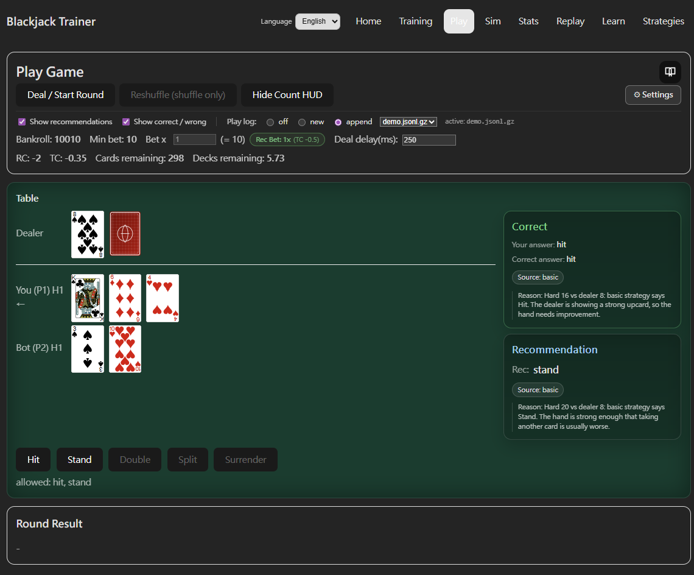
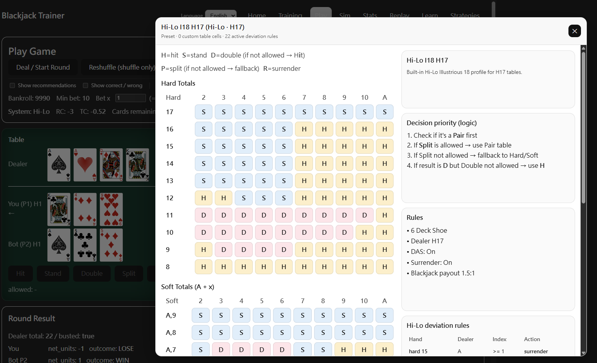
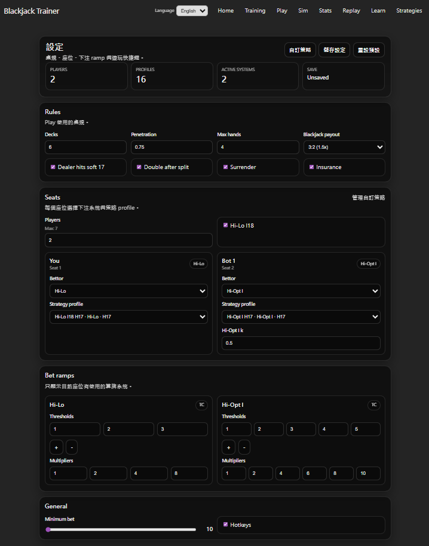

遊戲
Play 模式提供接近實戰的 blackjack 牌桌，最多可設定七個玩家席位（FREE 版限三個）。畫面整合算牌 HUD、建議下注、決策建議與對錯回饋，讓使用者在完整牌桌節奏中同時練習基本策略和算牌。
牌桌功能
- 算牌 HUD：畫面上方即時顯示 Running Count（RC）與 True Count（TC）。可依照目前 Mode（Basic、Hi-Lo、Hi-Opt I）切換顯示的算牌資訊。
- 建議下注：點擊「Use Recommended」後，app 依照目前算牌系統、True Count 與 Bet Ramp 自動帶入建議下注，或手動自行調整。
- 決策建議：開啟後，每手牌出牌前顯示建議動作（Hit、Stand、Double、Split、Surrender、Insurance）與對應策略原因。
- 對錯回饋：每次決策後即時顯示是否符合目前判斷模式，方便確認基本策略是否穩定。
- 多人席位：最多可設定七個玩家席位，選擇自己的座位位置，模擬接近真實牌桌的多人發牌節奏。

遊玩紀錄（Play Log）
遊戲畫面頂端的 Play log 選項讓你決定是否將本次遊玩的牌局紀錄下來，方便之後在 Replay 中回放每手決策：
- off：不記錄，遊玩過程不會儲存任何資料。
- new：開新紀錄檔案，每次選擇後會建立一個新的 .jsonl.gz 紀錄檔。
- append：接續現有檔案，從下拉選單選取之前的紀錄，新局數會直接接在後面繼續記錄，適合跨場次累積長期訓練歷程。

遊玩中的 Strategy Table
遊玩時，點擊遊戲畫面右上角的 Strategy Table 圖示，可叫出策略參考面板。面板顯示目前桌規對應的 Basic Strategy 表格（Hard / Soft Total）以及目前算牌系統的 Deviation 規則，包含你在 Strategies 頁面自訂義的 Index 門檻與對應動作，讓你在遊玩時隨時確認建議來源。

設定選項
右上角的設定面板可在不中斷遊戲的情況下調整以下項目：
- Mode：切換 Basic、Hi-Lo 或 Hi-Opt I，決定建議下注、決策建議與對錯判斷使用哪套標準。
- 桌規：H17 / S17、Double 規則、Surrender、保險等選項，模擬不同賭場桌況。
- 牌組數與穿透率：調整使用幾副牌與切牌深度，影響 True Count 換算與算牌難度。
- Bet Ramp：設定不同 True Count 門檻對應的下注倍數，影響建議下注計算與 Replay 中的下注對錯判斷。
- 發牌速度：從慢速到快速，初學者可放慢練習計算時間，熟悉後加快模擬真實壓力。
- 座位與玩家模式：設定玩家數量、自己的座位，以及各席位使用的 Mode（Basic、Hi-Lo、Hi-Opt I），建立不同練習情境。
- Hi-Opt I 設定（PRO）：調整 Ace side count 相關的進階算牌選項。
發牌速度調快後，需要在更接近實戰的節奏中同時完成 RC / TC 計算與下注判斷，是建立穩定習慣的有效練習方式。